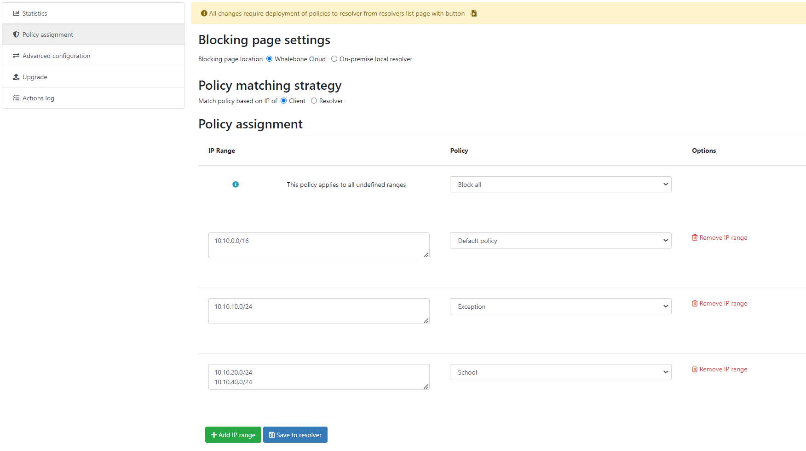
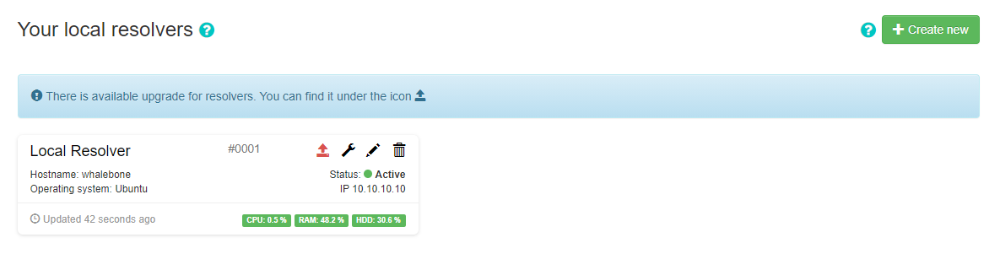
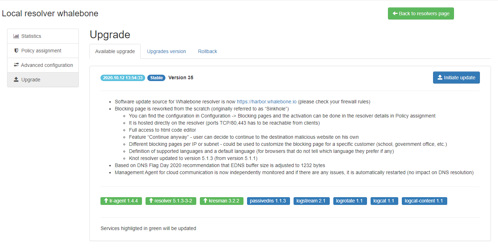
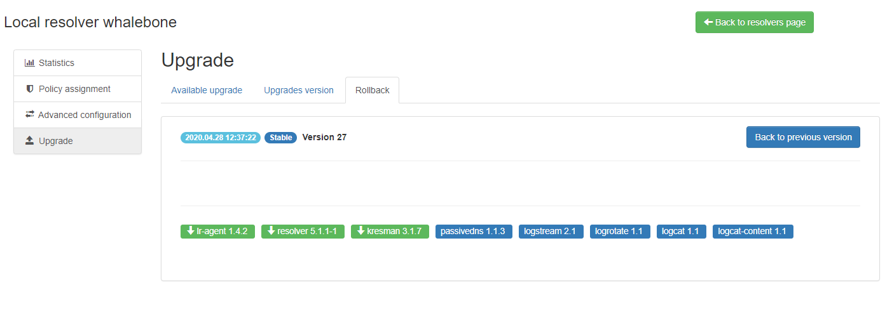

Resolver management
On the Resolvers page there is an overview of created resolvers. Administrator can adjust the configuration, deploy updates and install new resolvers.
Resolvers overview
In the main resolver overview there are tiles with resolver details. The overview includes information about operating system and resources as CPU, Memory and HDD usage. There is also the status of the communication channel between the resolver and the cloud indicated by the color-coded dot.
The resolver can be in one of these states:
Active - This is the expected status in production environments and signalizes that everything is running correctly.
Resolution problem - The resolver is unable to translate DNS requests.
Unavailable - The resolver has lost connection with Whalebone Cloud. This state does not affect the DNS translation however the resolver cannot get threat database updates and might not respond to policy or configuration changes initiated from the portal.
Upgrading - An upgrade command has been issued to the resolver. This state should not persist for more than a few minutes.
Not installed - The resolver was not yet installed.
Deploy configuration
If there been are any configuration changes which affect the DNS resolution, you have to deploy the configuration afterwards. Otherwise the changes will not take effect. In case there are any configuration changes available to be deployed, there will be a red icon with down right arrow visible on the resolver card. Once clicked, the webpage will ask for confirmation and the successful deployment will be notified in the top right corner.
Note
If the deployment resulted in error, try to repeat the action. The reason for the error could be a short term communication outage between the cloud and the resolver.
Configure Policy per Network Segment
Security and content polices can be asssigned in a granular manner to different segments of the network.
The setting applies per resolver and can be configured under Resolvers → Name of the resolver → Policy Assignment
Note
The configuration is per resolver. In case you want to apply the configuration to more than one resolvers, please modify all the necessary resolvers.
The policies can be applied by adding IP ranges in the available input form:
In order to provide a better understanding let’s consider an example with the network range 10.10.0.0/16.
We have created 3 different policies:
Default: the policy that we want to apply to the whole network, this is the most generic policy
Exception: a policy that must be applied to a specific segment in the network which will have all security and content filtering disabled.
School: a policy that we want to apply to 2 different subnets that have been assigned to school environments. In this case we have chosen to be more strict in the blocking.
Example policy settings. .. note:: The first setting option for policies is for all the undefined ranges. In case different policies affecting same range the more granular is applied.
Let’s summarize the requirements in the following matrix:
Policy |
Network |
|---|---|
Default |
10.10.0.0/16 |
Exception |
10.10.10.0/24 |
School |
10.10.20.0/24 and 10.10.40.0/24 |
The following image shows the process of assigning the policies:
Note
After adding the networks you must click on Save to resolver in order to to take effect. The changes will be then validated and a pop-up message will provide additional information.
In order to assign additional entries to an existing assignment, a new network range can be appended using newline as a separator.
Building on the previous example, in case we wanted to add the subnet 10.10.30.0/24 to the Exception Policy:
Configure Blocking Pages
In a similar manner to the Security Policies, the Blocking Pages can also be assigned to particular network ranges.
The first step is to select On-premise local resolver for the Blocking Page Location option. Two new fields are enabled where the IPv4 and IPv6 addresses of the Blocking Pages must be filled in.
Tip
The Blocking Pages are being hosted directly on the Resolvers so the IP addresses that are advertised to the clients must be used. The clients will then be redirected to the IP address of the resolver upon blocking. Please ensure that ports 80 and 443 are accessible on the firewall.
For each IP range that is added, there is a drop-down menu for the Blocking Page that should be assigned.

Assign Blocking Page to IP range
Important
The first entry in the Policy Assignment is considered the Default/Fallback. In case a client accesses the resolver from an undefined IP range, the respective options will apply.
Note
After making the necessary changes to the Blocking Page settings, please check whether the resolvers need to be re-deployed.
Upgrade/Rollback Resolver
When a new version of the Resolver is released, a red upgrade icon appears on the resolver’s management interface.
Upon clicking on the Upgrade icon, the respective menu is selected and important information about the new release is provided.
From this menu, the upgrade of the resolver can be initiated.
In case the installation of the new version does not yield the expected outcome, a rollback to the previous version is possible anytime in the Rollback tab:
